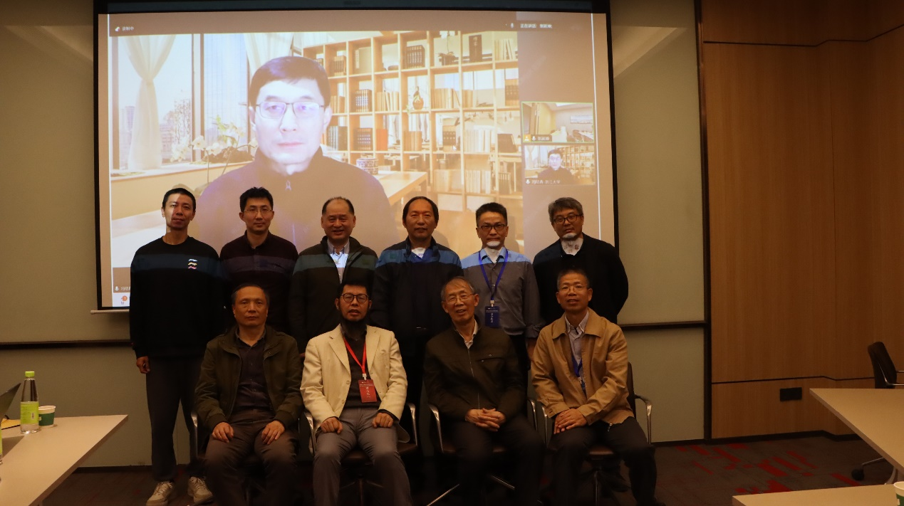
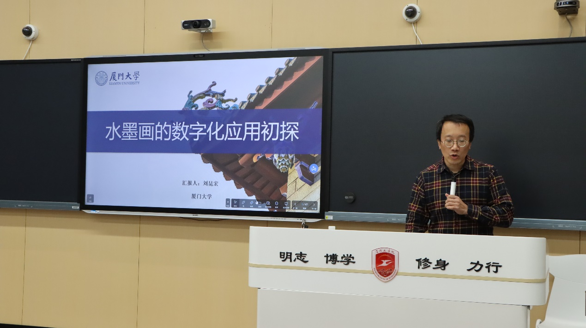
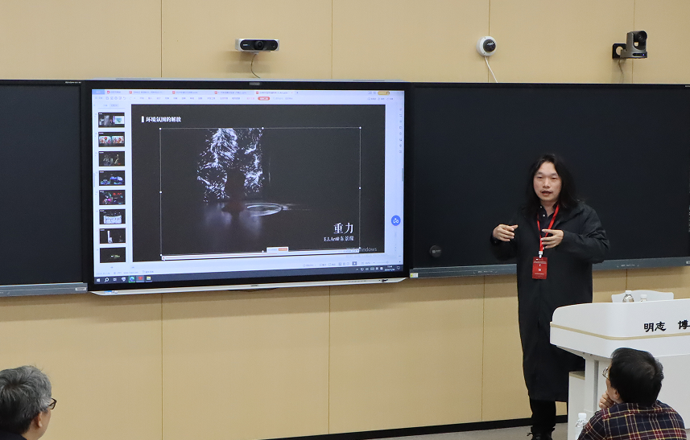
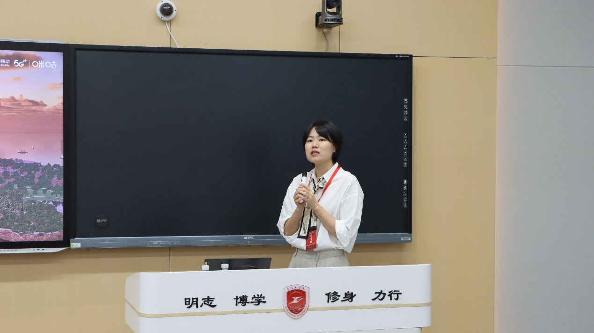
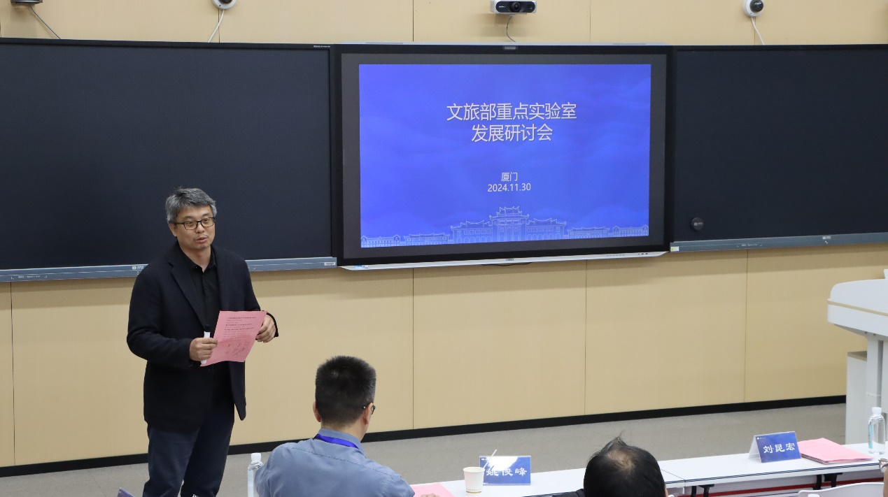
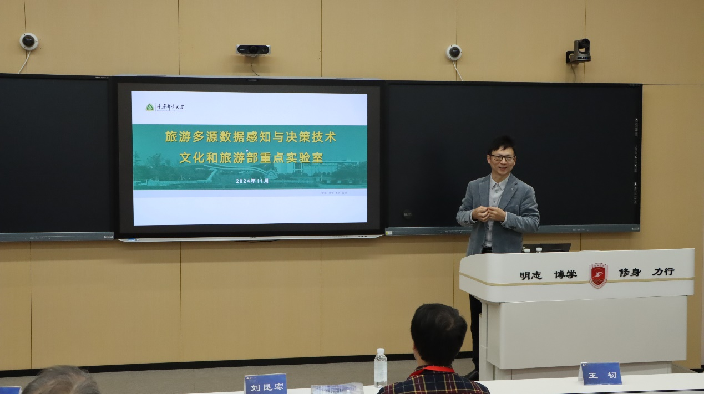
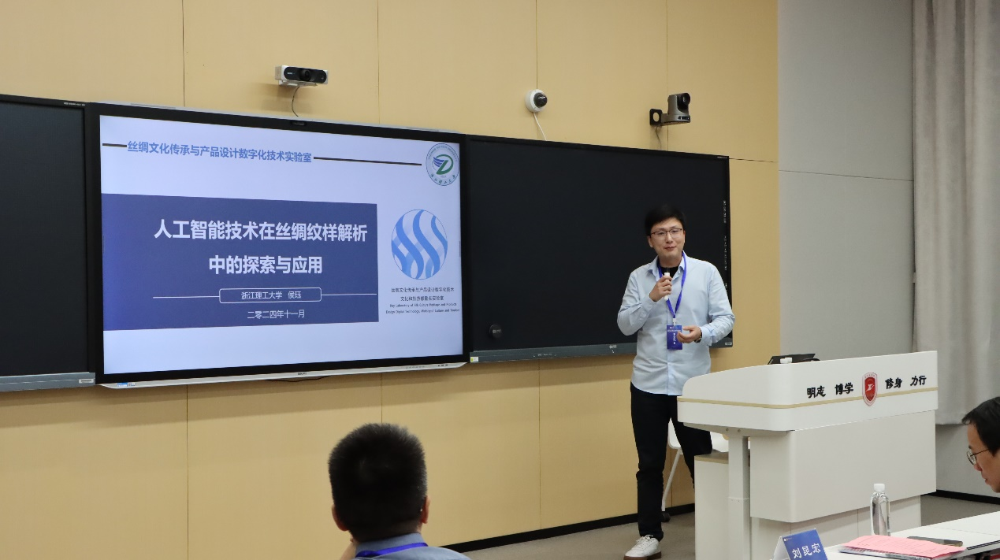
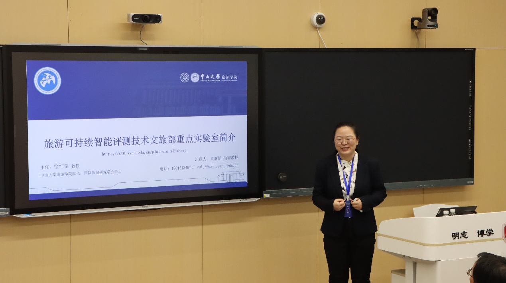
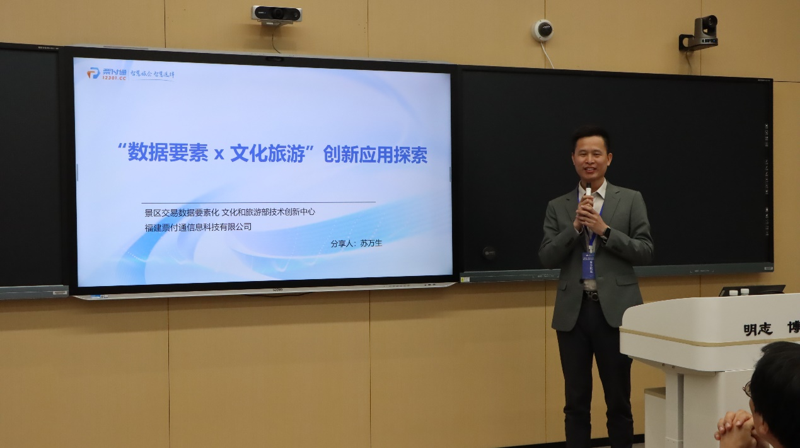
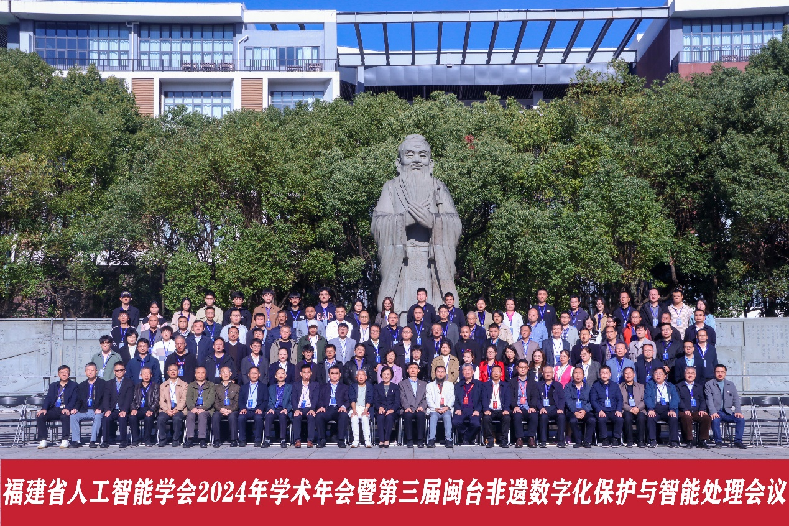

第三届闽台非遗数字化保护与智能处理学术会议于2024年11月29日-12月1日在厦门召开，主题为“数字科技赋能新文旅”；同期举办福建省人工智能学会2024年学术年会，主题为“混合智能”。本次会议由福建省人工智能学会主办，厦门工学院承办，厦门大学、闽台非遗文化数字化保护与智能处理文化和旅游部重点实验室等单位协办，并得到厦门大学社科处、科技处、信息学院、电影学院、建筑与土木工程学院的大力支持。
会议期间还举行了闽台非遗文化数字化保护与智能处理文化和旅游部重点实验室（以下简称“文旅部重实验室”）工作会议，非遗论坛以及文旅部重实验室发展研讨会。
11月29日，在大会开幕之前，文旅部重实验室召开工作会议，学术委员会主任郭宗明研究员、荣誉顾问彭群生教授、学术委员会专家与实验室主任史晓东教授，副主任姚俊峰教授、王量量副教授，以及多位实验室成员参会。
史晓东教授首先从介绍24年实验室研究团队和方向、工作进展、未来工作计划等三个方面介绍了实验室的现状和未来计划。随后，参会专家从各方面对实验室存在问题与痛点，提出宝贵的建议，并对未来工作规划了前进路径，做出了顶层设计，为未来发展擘画蓝图，注入信心和动力。会议中，彭群生教授提出，为突出实验室的闽台特色，应该面向闽台非遗文化构建文化基因库与互动体验传承馆，海峡两岸人民通过文化体验认同闽台文化，对促进闽台文化和旅游行业、凝聚民族向心力、推进两岸合作交流、和平发展都具有重要意义。

部重实验室工作会议

参会人员合影
11月30日的非遗分论坛，包含3个专题报告（水墨画数字化应用探索、泛AI时代的非遗传承、鼓浪屿元宇宙-新质生产力背景下，世界文化遗产保护活化的新视点）。

厦门大学刘昆宏教授作报告
首先由厦门大学刘昆宏教授以“水墨画的数字化应用初探”为题作报告。他报告了：近年在文旅领域应用研究中，课题组围绕不同风格水墨画的数字化应用研究进行探索，通过融合虚拟现实、生成式人工智能等技术，针对不同类型水墨画的要素与特点，设计多种方案进行画中的关键特征抽取，在此基础上展开二次创作。课题组的初步探索在一定程度上取得了预期的应用效果。

厦门辰瑞电子科技有限公司王韧技术总监作报告
厦门辰瑞电子科技有限公司王韧技术总监介绍了在AI日益进化的时代下，非遗保存、传承、宣传的全新维度可能性。

咪咕新空文化科技（厦门）有限公司-鼓浪屿元宇宙项目总监段洛宥作报告
咪咕新空文化科技（厦门）有限公司-鼓浪屿元宇宙项目段洛宥总监介绍了：鼓浪屿元宇宙的构建，既是科技与文化的深度融合，也是文化遗产保护理念的革新。它不仅保存了鼓浪屿的样貌和历史记忆，更通过创新的方式使其活化，使之成为连接过去与未来，现实与虚拟的桥梁。在新质生产力的推动下，我们期待鼓浪屿元宇宙能成为世界文化遗产保护和活化的典范，为全球范围内的遗产保护提供新的思考和实践路径。
随后，进行了文旅部重点实验室发展研讨会，来自旅游多源感知与决策技术文旅部重点实验室、丝绸文化传承与产品设计数字化技术文化部重点实验室、可持续旅游智能评测技术文化和旅游部重点实验室、景区交易数据要素化文化和旅游部技术创新中心及闽台非遗文化数字化保护与智能处理文化和旅游部重点实验室共5家部重实验室（文旅部创新中心）的代表参会，会议由厦门大学王量量副教授主持。

厦门大学王量量副教授

重庆邮电大学张旭教授

浙江理工大学侯珏特聘副教授

中山大学粟丽娟助理教授

景区交易数据要素化文化和旅游部技术创新中心苏万生主任
在发展研讨会中，3家文旅部重点实验室代表和文旅企业代表，通过4场专题报告结合部重实验室的定位、功能与发展方向，分享实验室在文化科技融合、文旅资源开发利用等方面的研究成果。在随后的交流研讨中，参会嘉宾探讨如何通过高科技手段（如数字化、人工智能、大数据等）促进文旅产业发展；并通过案例分析各实验室在智慧文旅、文物保护、非遗传承等领域的创新实践；探讨如何加强与政府、企业、高校实验室的合作。大家均对目前实验室共享、互动、互学的机制表达了高度认可，希望交流会定期举行。
为期三天的会议，大家交流人工智能与数字科技领域最新的研究成果，讨论福建与台湾的非物质文化遗产通过数字技术手段进行保护、传承和创新的跨领域合作方向，在数字科技加持下，两地在非遗领域的合作与发展具有重要意义。

福建省人工智能学会2024年学术年会暨第三届闽台非遗数字化保护与智能处理会议合影
图文：张延坤